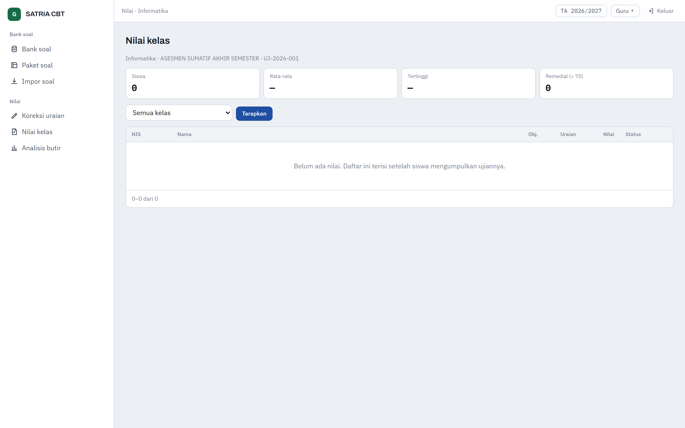

6. Nilai kelas
Nilai setelah ujian berjalan — dan mengapa ia masih kosong.
Nilai kelas adalah nilai siswa pada ujian yang memakai paket Anda. Halaman ini membaca, bukan mengubah — kecuali bila Admin membuka kunci koreksi.
Bila daftarnya kosong

Daftar ini terisi setelah siswa mengumpulkan ujiannya. Aplikasi menuliskannya sendiri di layar. Tidak ada yang perlu Anda aktifkan, dan tidak ada yang rusak: sebelum ujian berjalan, memang belum ada nilai.
Setelah ujian berjalan

Laman ini berisi empat angka di atas dan tabel per siswa di bawah.
- Siswa — berapa yang sudah mengumpulkan.
- Rata-rata, Tertinggi — keduanya dihitung dari nilai akhir, bukan nilai objektif saja.
- Remedial (< 70) — berapa siswa di bawah ambang. Angka ini membantu menentukan siapa yang perlu ditindaklanjuti.
Kolom tabelnya: NIS, Nama, Obj. (nilai objektif), Uraian (nilai dari koreksi manual), Nilai (gabungan keduanya), dan Status.
Nilai akhir tidak akan lengkap selama uraian belum dikoreksi. Kolom Nilai menghitung dari keduanya. Selama masih ada uraian yang menunggu, angka di kolom itu bukan nilai akhir siswa — dan Admin tidak bisa mempublikasikannya. Pekerjaan Anda di Bab 7 adalah yang menahan publikasi itu.
Penyaring kelas
Daftar bisa disempitkan per kelas. Ini berguna pada ujian yang diikuti beberapa kelas: rata-rata seluruh angkatan mencampur kelas yang berbeda kemampuan, dan pertanyaan “kelas saya bagaimana?” hanya bisa dijawab setelah disaring.
Rata-rata berubah saat penyaring dipakai. Angka di atas tabel mengikuti penyaring yang aktif, bukan seluruh ujian. Pastikan penyaringnya sudah di-Reset sebelum menyimpulkan sesuatu tentang keseluruhan kelas.
Apa yang tidak bisa Anda lakukan di sini
- Menyunting nilai objektif — ia dihitung dari kunci jawaban. Bila angkanya salah, kuncinya yang salah, dan itu diperbaiki lewat Admin (hitung ulang setelah kunci dibetulkan).
- Mempublikasikan — publikasi hasil adalah keputusan Admin, per event.
- Mengubah nilai uraian di sini — itu dilakukan di laman koreksi.
Nilai yang sudah dipublikasikan bisa dikunci Admin. Saat kunci koreksi aktif, Anda tidak bisa mengubah nilai uraian. Bila perubahan Anda ditolak, hubungi Admin: yang membuka kunci itu Admin, bukan Anda.